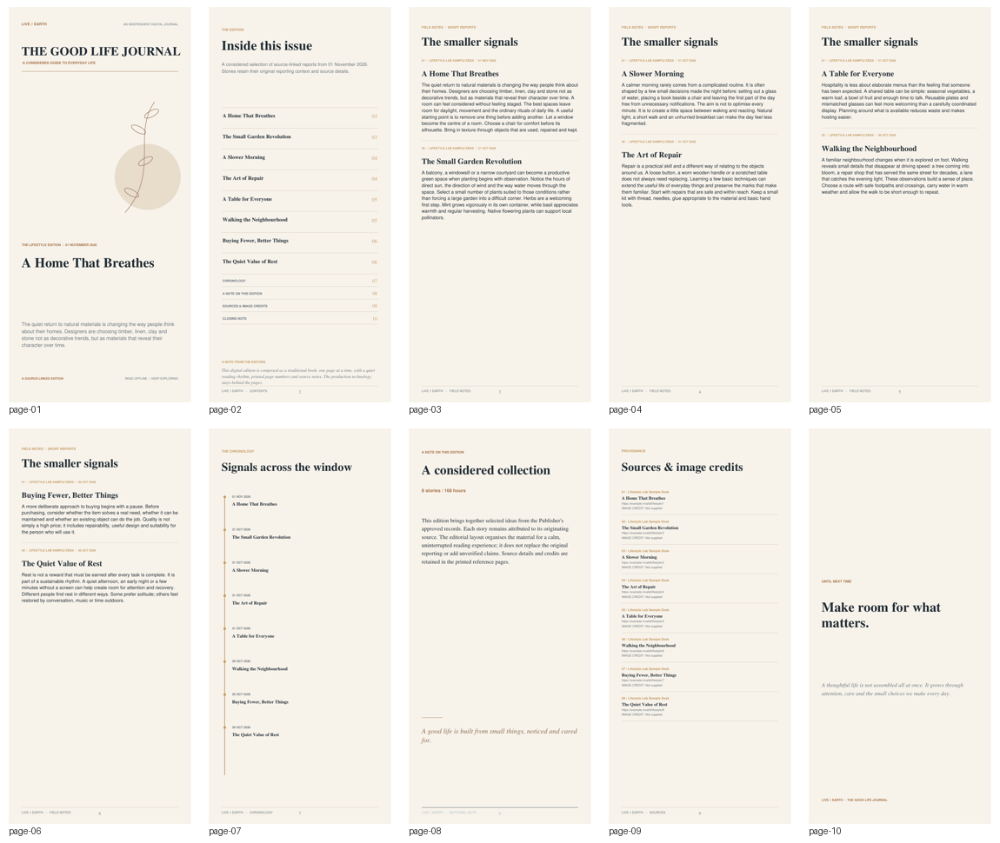

LIVE // EARTH · TEMPORARY ENGINE TEST
Lifestyle
Lab
A different subject. The same Universal Editorial Engine. One carefully composed, book-like mobile magazine.
THE GOOD LIFE JOURNAL
A considered life, beautifully lived.
Ideas for home, gardens, rituals, repair, neighbourhoods and the everyday choices that shape a life.

TEST MATERIAL: These eight articles are synthetic editorial samples created only to test the shared Engine's pagination and layout. They are not real reporting and contain no external news claims. This page is temporary and does not add a permanent app feature.
Page overview
